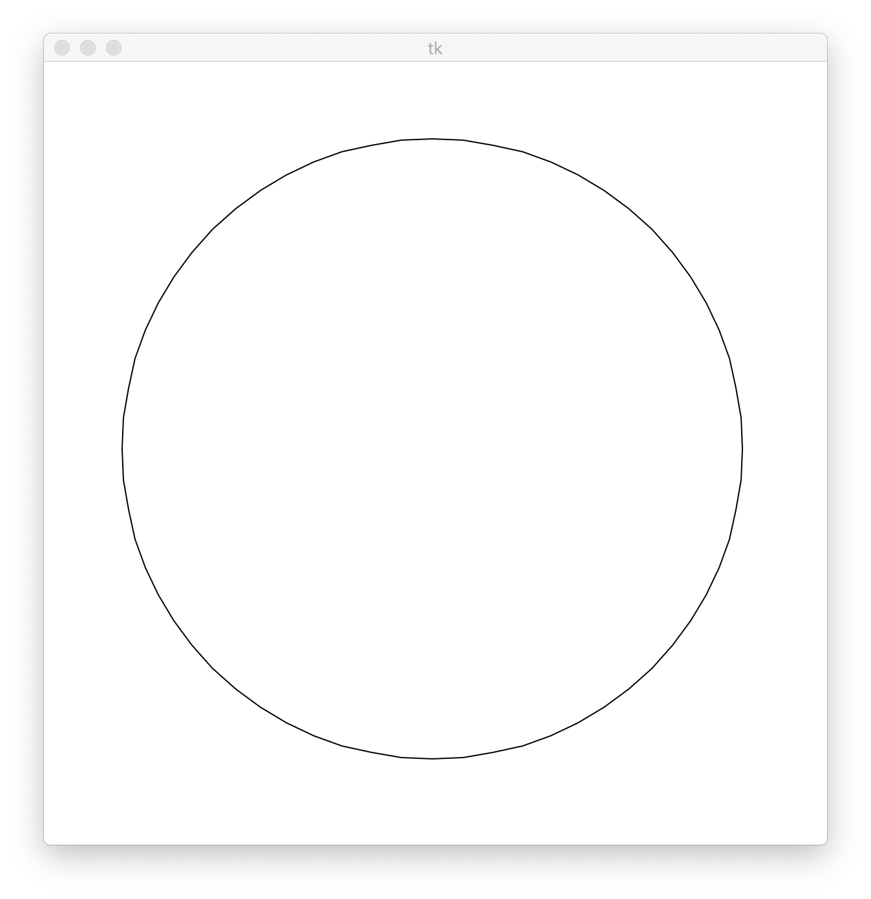
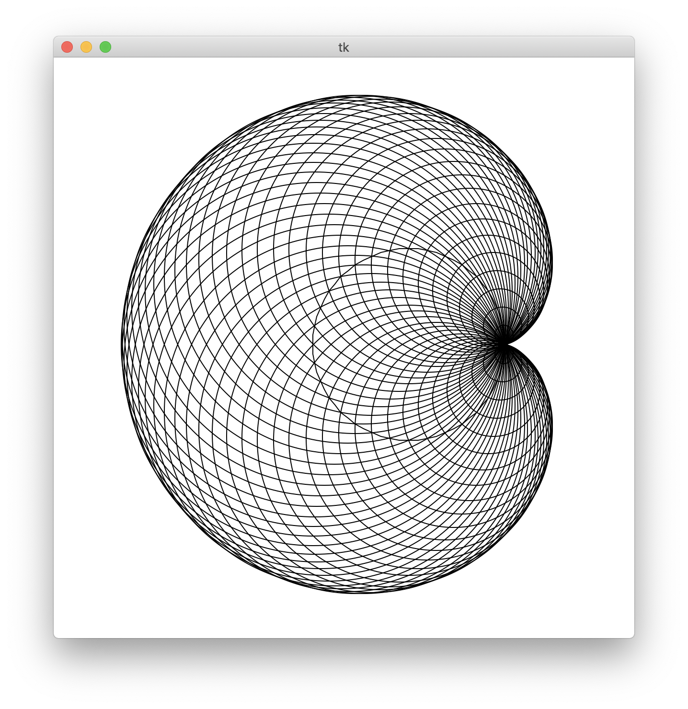
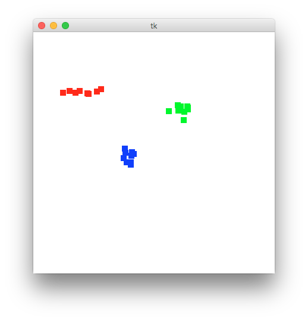
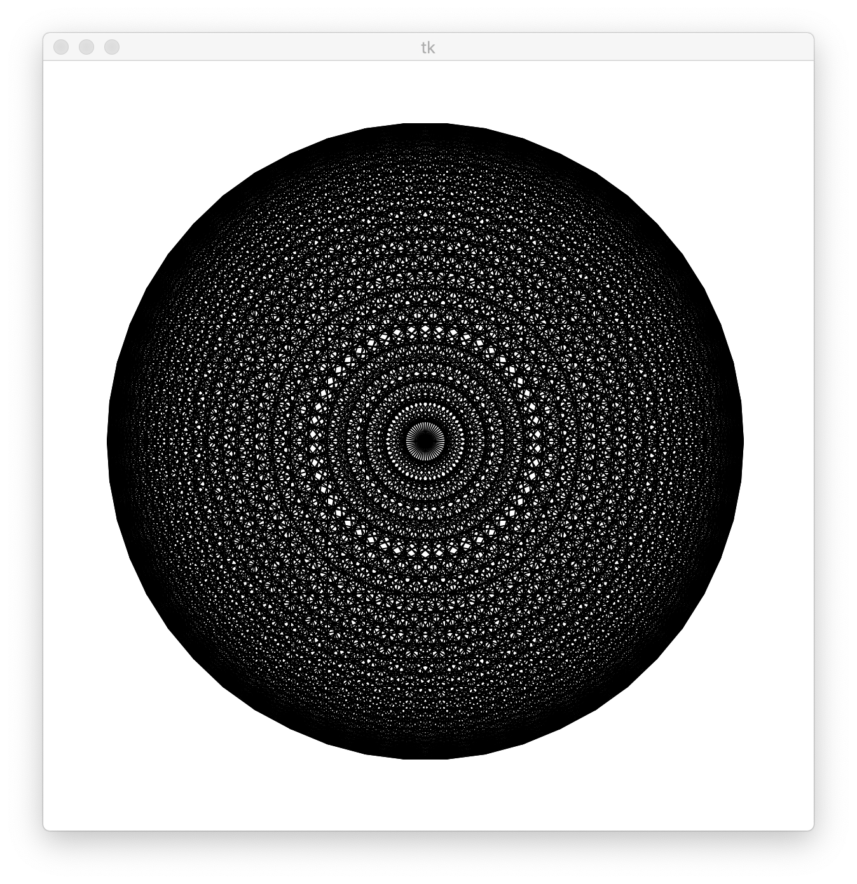
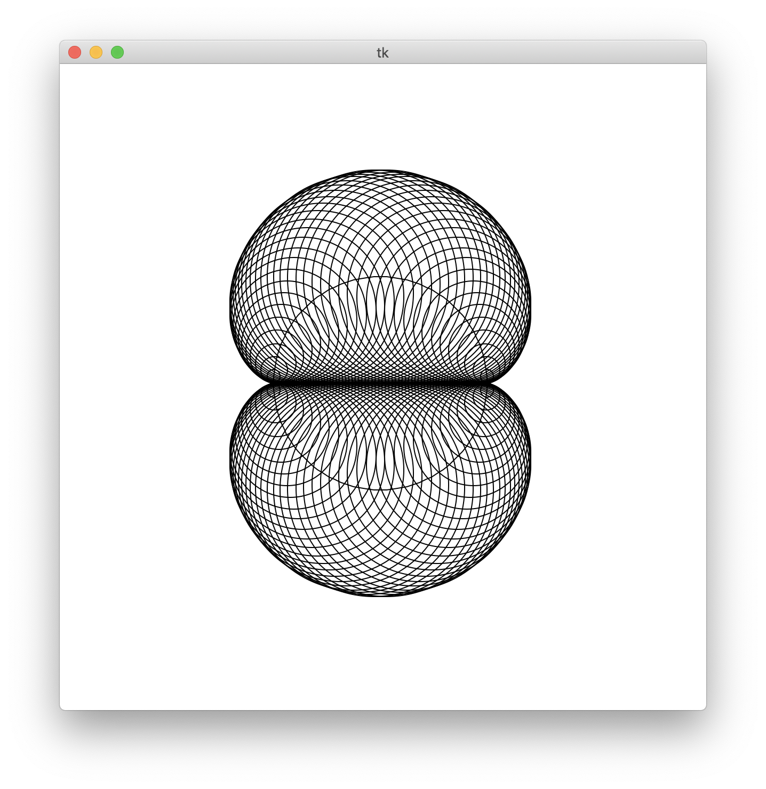
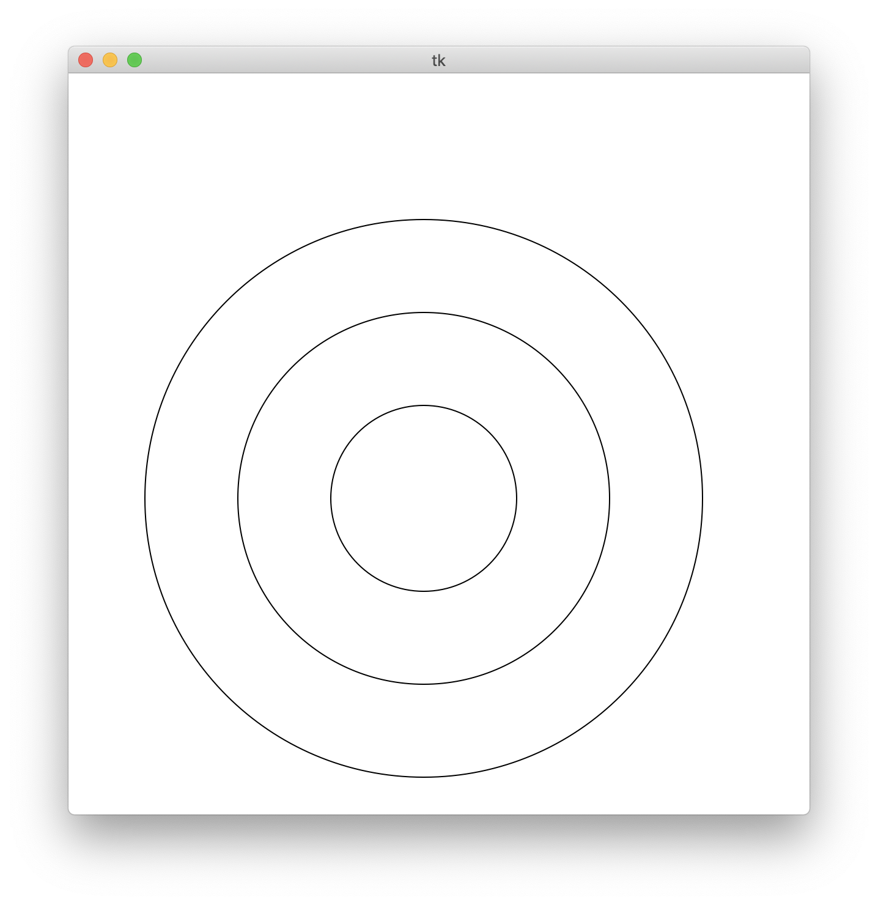

第５回
| 氏名 | 林橘平
|
|---|
| クラス | 総合情報学コース3年
|
|---|
| 学生証番号 | 08-192025
|
|---|
□課題5.1 - 5.2節 例1:2次元べクトルの定義
○プログラムリスト
例題のため略
○実行コマンド
(base) MBP:Chap05 hayashikippei$ python vectorMatrix.py
○実行結果
| [3 4] | = 5.0
[ 1 -1] + [3 4] = [4 3]
[3 4] - [ 1 -1] = [2 5]
[3 4] * 2 = [6 8]
[ 1 -1] * [3 4] = [ 3 -4]
[ 1 -1] . [3 4] = -1
rotate ( [3 4] ) = [-4. 3.]
scale&rot ( [3 4] ) = [8. 6.]
inv&rot ( [3 4] ) = [3. 4.]
○考察
Numpyのarrayクラスを用いて、ベクトルの大きさを返すnorm, 角度t分回転させる単位行列を返すrotMatrix, 定数s倍する行列を返す
scaleMatrixの３つの関数を定義している。それらの３つを用いて基本的な行列の計算を行った。出力結果を見ても正しく計算できていることがわかる。
□課題5.2 - 5.3節 例1:円の描画
○プログラムリスト
例題のため略
○実行コマンド
(base) MBP:Chap05 hayashikippei$ python myCircle.py
○実行結果
# of points ->64

○考察
２章でやった円の描画をmyCanvasを用いて行った。多角形の座標の配列を返す関数circle()の部分は同じだが、多角形を描画するdisplay()
関数の部分が異なる。こちらでは、myCanvasクラスの与えた点列の座標を繋いで多角形を描くdrawPolygon()を用いている。
そのためプログラムがより簡潔になっている。多角形の描画のはよく実行するので、こうしてクラスにまとめて書いてそれを呼び出すようにすれば
一つ一つのプログラムが簡潔になって良い。
□課題5.3 - 5.3節 例2:カージオイドの描画
○プログラムリスト
例題のため略
○実行コマンド
(base) MBP:Chap05 hayashikippei$ python myCardioid.py
○実行結果
# of points ->64

○考察
２章でやったカージオイドの描画をmyCanvas, vectorMatrixを用いて行った。この際に多角形の各頂点と基点の距離が必要になるが、vectorMatrix
のnorm()を使えば簡単に求められる。円の中心の座標と半径が得られたので、あとはmyCanvasのdrawCircle()を使えば円が円が描け、
カージオイドが描画できる。この場合も２章のプログラムと比べると、円の半径の導出、円の描画の部分のプログラムが簡潔になっている。
□課題5.4 - 5.3節 例2:マーカの描画
○プログラムリスト
例題のため略
○実行コマンド
(base) MBP:Chap05 hayashikippei$ python myMarker.py
○実行結果

○考察
４章でやったマウスを用いたマーカの描画をmyCanvasを用いて行った。myCanvasのdrawMarkerを用いれば任意の座標に任意の色でマーカを
描くことができるので、(event.x, event.y)を引数に与えてやることでクリックした部分にマウスのボタンに応じた色のマーカを描くことができる。
4章のプログラムと比べても、その部分のプログラムが簡潔になっている。
□課題5.5 - 5.3節 章末課題:ダイアモンドパターンの描画
○プログラムリスト
from myCanvas import MyCanvas
from vectorMatrix import norm
import myCircle
def display(canvas, points):
for i in range(len(points) -1):
for j in range(i + 1, len(points)):
canvas.drawPolyline((points[i], points[j]))
def main():
canvas = MyCanvas()
points = myCircle.circle((0, 0), 250 * canvas.r / canvas.w)
myCircle.display(canvas, points)
display(canvas, points)
canvas.mainloop()
if __name__ == '__main__':
main()
○実行コマンド
(base) MBP:Chap05 hayashikippei$ python myDiamond.py
○実行結果
# of points ->50

○考察
ダイアモンドパターンは全n個の点から全ての２点間の直線を描くことで描画できる。or文を２回使って
順序を考慮せずに全ての2点を選び、drawPolylineで直線を描いた。j = i+1 から始めることで同じ線を２回描かないようにして効率化している。実行結果を見ても、ダイアモンドパターンの描画に成功している。
□課題5.6 - 5.3節 章末課題：ネフロイドパターンの描画
○プログラムリスト
from myCanvas import MyCanvas
from vectorMatrix import norm
import myCircle
def display(canvas, points):
for i in range(len(points)):
canvas.drawCircle((points[i][0], points[i][1]), points[i][1] - points[0][1])
def main():
canvas = MyCanvas()
points = myCircle.circle((0, 0), 100 * canvas.r / canvas.w)
myCircle.display(canvas, points)
display(canvas, points)
canvas.mainloop()
if __name__ == '__main__':
main()
○実行コマンド
(base) MBP:Chap05 hayashikippei$ python myNephroid.py
○実行結果
# of points ->100

○考察
円によってネフロイドを描画した。基点をpoints[0]に定め、基点を通る直線を y = points[0][1]とした。各頂点から直線の距離を半径として
各頂点を中心とした点を描けば良いので、myCanvasのdrawCircleを用いて各頂点で円を描き、ネフロイドを描画した。実行結果を見ても正しく描画できている。
□課題5.7 - 5.3節 章末課題：マウスによる円の描画
○プログラムリスト
from myCanvas import MyCanvas
from vectorMatrix import norm
import myCircle
def pressed1(event):
global startX, startY
startX, startY = (event.x, event.y)
def dragged(event):
global canvas , startX, startY
canvas.clear()
x, y = (event.x, event.y)
r = norm((canvas.point(x, y) - canvas.point(startX, startY)))
canvas.drawCircle(canvas.point(startX , startY), r)
canvas.drawCircle(canvas.point(startX , startY), r / 2)
canvas.drawCircle(canvas.point(startX , startY), r * 3 /2)
def main():
global canvas
canvas = MyCanvas()
canvas.bind('<Button-1>', pressed1)
canvas.bind('<B1-Motion>', dragged)
canvas.mainloop()
if __name__ == '__main__':
main()
○実行コマンド
(base) MBP:Chap05 hayashikippei$ python myDrawcircle.py
○実行結果

○考察
4章のマウスによって円を描くプログラムをmyCanvasを用いて書いた。pressed1()でクリックした位置の座標を(startX, startY)に記録し、
dragged()ではまずmyCanとvasのclear()で背景を白にリセットし、現在のマウスの位置と(startX, startY)の距離rをnorm()によって求め、(startX, startY)を中心とした半径r, r/2, 3/2 *rの円を
drawCircle()で描いた。半径を変更するにはdrawCircleの第二引数の値を変えるだけなので非常に簡単で、myCanvasの有用性がわかる。
□課題や授業に関して
○レポート作成に要した時間
２時間
○特に苦労した点
なし
○授業についての感想や希望
なし